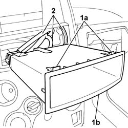

7040A78 radio compartment box r r
- Path
- Procedures > 70 FITTINGS > 7040 BODYSHELL INTERIOR TRIMS AND FITTINGS > 7040A passenger compartment trim > 7040A78 radio compartment box r r
- Kind
- repair procedure (removal / refitting; the operation number is the code)
- Applies to
- all engines; all production periods
- Interactive page
- https://sloeber94.github.io/elrnDB-fPnd/en/#/2753191
Applies to: all engines; all production periods
 Removing
Removing
 Refitting
Refitting1. Work on the fastening tabs (1a) and partly extract the radio console.
2. Release the radio preparation electrical connections.
Remove the radio console.

Applies to: all engines; all production periods
Refitting
RemovingSecure the radio preparation electrical connections to the radio console.
Fit the radio console until the fastening tabs are securely fitted.
Topics that link to this page (21)
- 5010D17 mixed air upper sensor - r r
- 5020A10 heater box - r+r
- 5020A30 heater fan motor - r+r
- 5020A44 heater fan motor resistor - r+r
- 5020A50 heater radiator - r+r
- 5040B64 sensor on evaporator for a/c ecu - r + r
- 5040C10 air conditioner box - r+r
- 5040C26 evaporator unit condensate collection tank - r r
- 5040C30 fan motor - r+r
- 5040C50 air conditioner heater radiator - r+r
- 5040C64 a/c evaporator - r+r
- 5040D14 ecu with automatic air conditioner pushbuttons - r+r
- 5040D75 Air conditioning recirculation flap control MOTOR - R.R.
- 5505A90 rear wiring bundle - r r or replace
- 5505C26 bonnet wiring - r r
- 5505C34 intergrated instrument under facia front air bag wiring - r r
- 7005A24 front side door r r
- 7040A10 instrument facia trim - r+r
- 7040A72 UPPER CENTRAL DOCUMENT HOLDER on dashboard - R.R .
- 7040A97 facia trim support beam - r r
- 7040L10 cabin floor carpet - r r